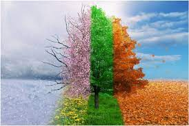

The opportunites for activities is endless
 Seasonal activites are abundant during any season. Some of my favorite seasons for activities are summer, winter, spring and, fall. If I had to choose my favorite season it would be probably winter. I love the snow and what it brings very much. I asked my friend Waldo what his favorite season was and he said, "Spring! I like the spring becasue the weather is nice and it's soccer season." I argued Waldo on this poitn but he stood his ground. He must really like spring I guess. I asked my Hoxie what season he likes and his response was, "winter because it is cold like his soul!!!". I thought all of their answers were stupid except for my buddy Quinn who added, "I like summer because it is alwasy so cold here!"I responded with "Valid." After taking a poll of the Carroll Community it sounds like all of these losers enjoy summer. Hoxie came to retract his statement about the seasons and instead said "Chuck I enjoy Spring actually. It brings about my allergies and I begin to burn my fair pale skin." Hoxie got me rethinking about changing my answer to I realized screw the seasons they are stupid and we shouldnt have them. I know all of this writing sounds like BS which it is. I am trying to take up space in this paragraph because I can't talk about seasonal activites for this long. My favorite activites from each season are as follows. In the summer I like to got to the river and play spike ball. In the Fall my favorite activity is to celebrate Holloween week in college. My favorite winter activity is skiing. Lastly, my favorite spring activity is softball weekend. I hope that this is enough writing to satisfy everyone and get me an A on this assignment.